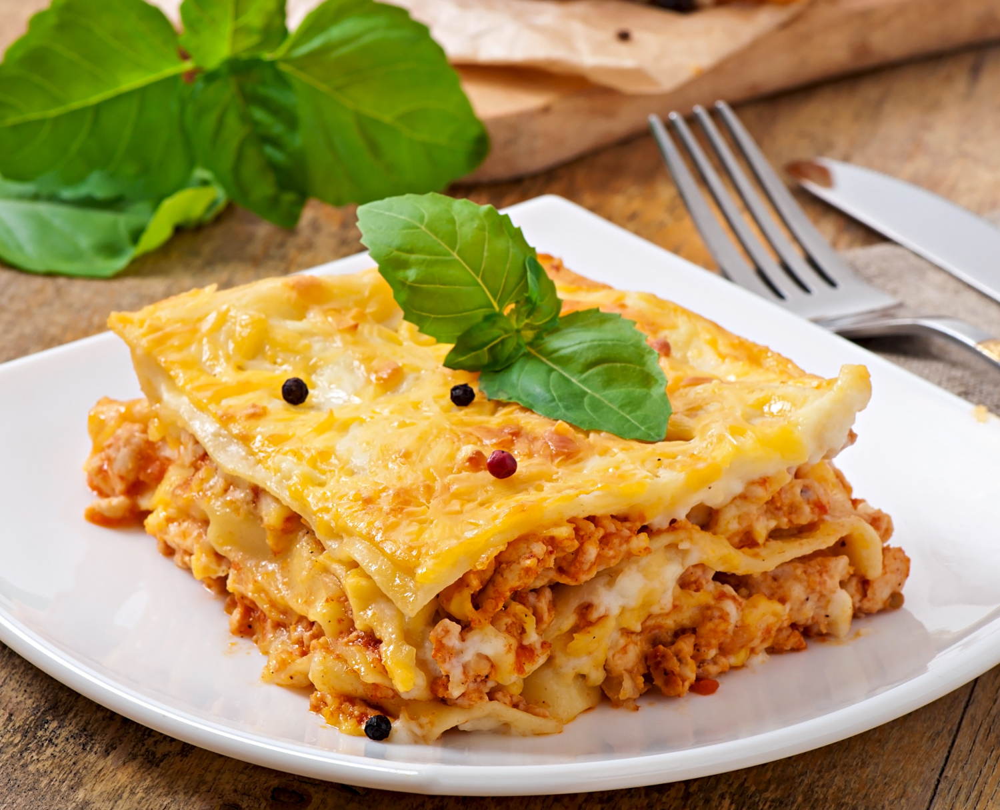

Home
Lasagna

Delicious lasagna. -- (magnific.com)
Lasagna is a classic Italian baked dish known for its hearty, layered structure.
Originating from regions like Emilia-Romagna, it consists of alternating layers of wide, flat pasta sheets, rich meat sauce, creamy béchamel, and generous amounts of Parmesan and mozzarella cheese.
Unlike many other pastas, lasagna is assembled and baked in the oven, allowing the flavors to meld together while the top becomes golden and crispy.
The result is a warm, comforting casserole that offers a perfect balance of savory meat, creamy cheese, and tender pasta in every bite.
Ingredients
- Lasagna pasta sheets (fresh or dried)
- Ground beef or pork
- Tomato paste or canned crushed tomatoes
- Onion, carrot, celery
- Butter
- Flour
- Milk
- Parmesan cheese
- Mozzarella
- Olive oil
- Salt and black pepper
- Nutmeg
Steps
-
Make the meat sauce (ragù): Sauté finely chopped onion, carrot, and celery in olive oil or butter.
Add ground beef (and pork), brown the meat, then add tomato paste and a little water or broth.
Simmer slowly for at least 1–2 hours.
-
Make the béchamel sauce: In a separate pot, melt butter.
Stir in flour and cook for 1–2 minutes.
Gradually whisk in warm milk until smooth and thickened.
Season with salt, pepper, and nutmeg.
-
Prepare the pasta sheets: If using dried lasagna sheets,
boil them briefly in salted water until al dente,
then drain and lay them flat on a towel.
(No-boil or fresh sheets can be used directly.)
-
Preheat the oven: Set your oven to 180–190°C (350–375°F).
-
Assemble the lasagna: Spread a thin layer of meat sauce on the bottom of a baking dish.
Cover with a layer of pasta sheets.
Add meat sauce, then béchamel, then grated Parmesan.
Repeat these layers (pasta → meat → béchamel → cheese) 3–5 times.
-
Finish the top layer: End with pasta sheets,
then a generous layer of béchamel and Parmesan (plus mozzarella if desired).
-
Bake: Cover loosely with foil and bake for 20–30 minutes.
Remove the foil and bake for another 10–15 minutes until the top is golden and bubbling.
-
Rest before serving: Let the lasagna rest for 10–15 minutes out of the oven.
This allows the layers to set so it cuts cleanly.
Then serve.